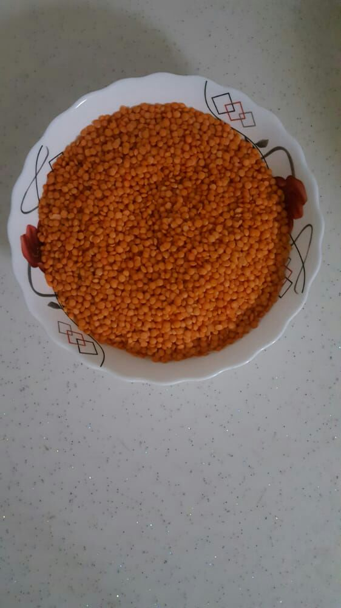

Mercimek çorbası
Malzemeleri her evde bulunan çabuk pişen bir atıştırmalık

Kaç Kişilik: 3 kişilik
hazırlama süresi: 15 dakika
pişirme süresi: 40 dakika
Mercimek Çorbası Tarifi İçin Malzemeler :
- 400 gr mercimek
- İsteğe göre biraz tuz
- İstenirse biraz sarımsak
- Bir buçuk litre su
- bir parça soğan
Mercimek Çorbası Nasıl Yapılır ?
- Mercimekleri pisliklerden arındırdıktan sonra güzelce yıkayın.
- Soğanı soyduktan sonra yemeklik doğrayın.
- Tencereye yağı ekledikten sonra ateşe koyun ve mercimekleri karıştırarak kavurun.
- Tüm malzemeleri 40 dakika kaynatmak için tencereye kaynar su ekleyin.
- Çorbaya tuz ekleyin.
Afiyet olsun
Tarif: benim karım